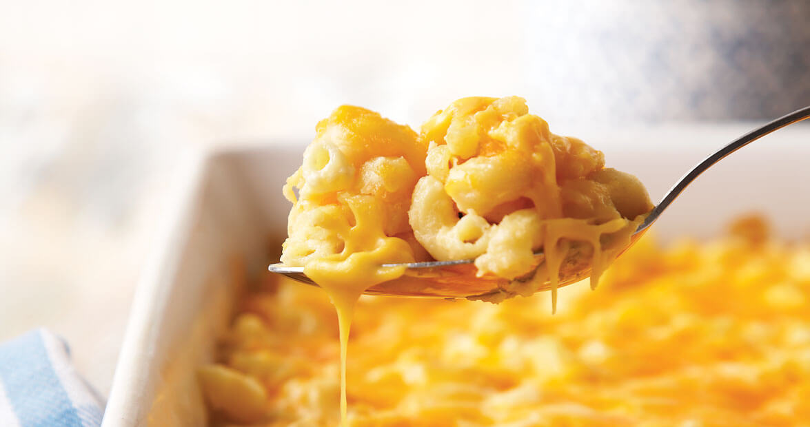

Mac n Cheese
Easy to wind up in 15 minutes homemade mac 'n cheese
Ingredients
- Maceroni pasta
- CHeddar cheese
- Milk
- flour
Steps
- Boil the noodles: Boil the macaroni in salted water until the noodles are al dente.
Drain and transfer to a prepared baking dish.
- Make the cheese sauce: Melt butter, then whisk in the flour.
Whisk in the milk, bring to a simmer, and stir in the cheeses.
Season with salt and pepper and continue simmering until the sauce is thick.
Pour the sauce over the noodles and stir.
- Make the topping: Melt two tablespoons of butter in a skillet, add the bread crumbs, and toast until the crumbs are brown.
Spread the topping over the macaroni and cheese, then sprinkle with paprika.
- Bake the mac and cheese: Bake in the preheated oven until the topping is golden brown.